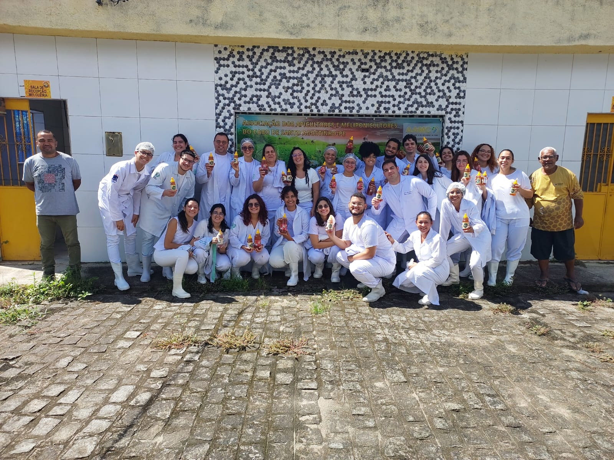
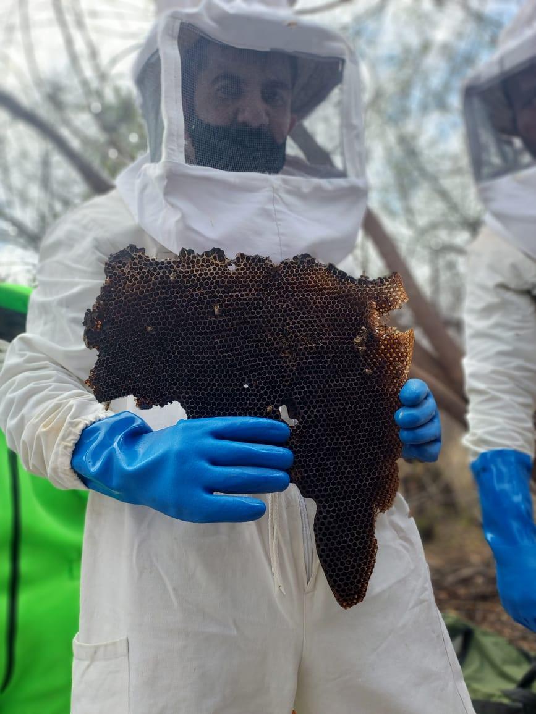
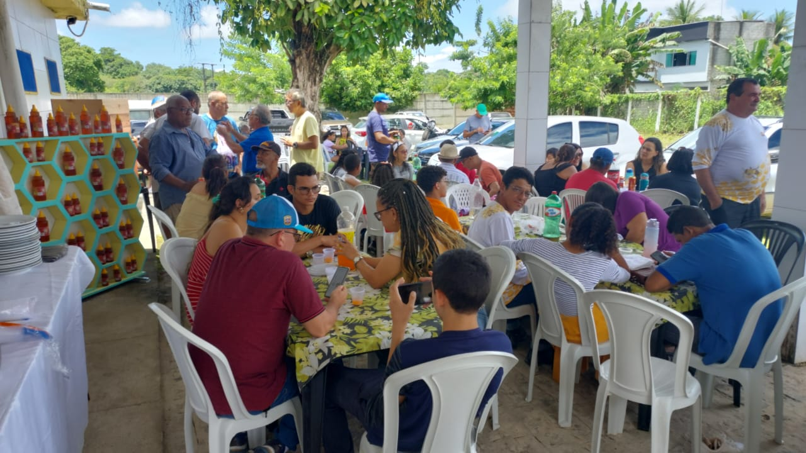
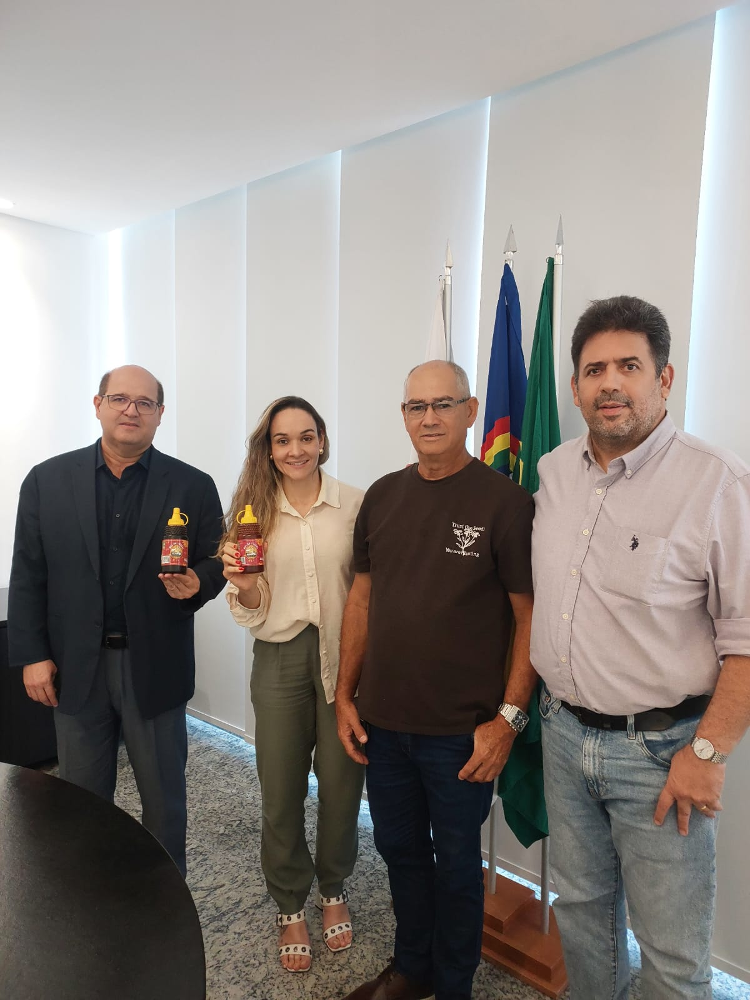
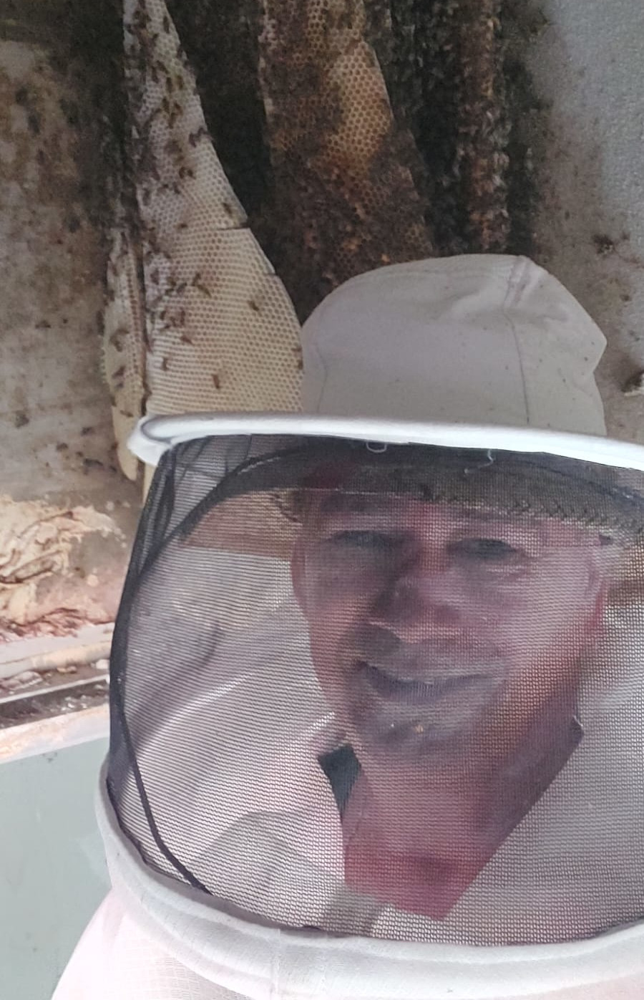
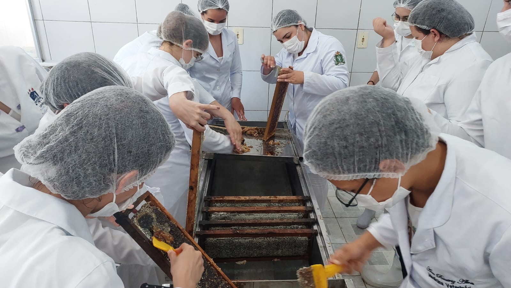
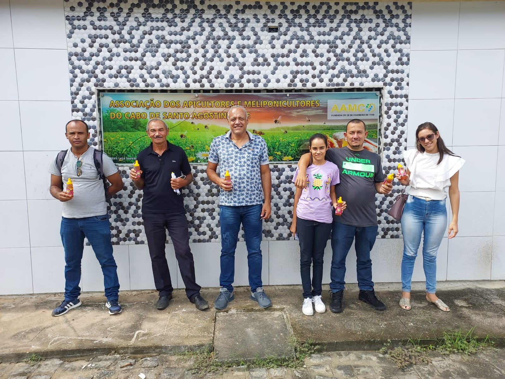
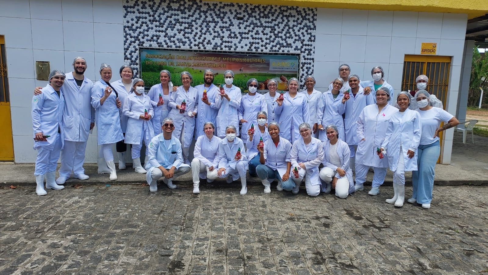

Fundada em 28 de Fevereiro de 1994, a AAMC nasceu com o objetivo de unir, fortalecer e organizar os produtores de mel e derivados da nossa região. Ao longo de mais de três décadas de história, transformamos a atividade leiteira e extrativista local em um pilar de sustentabilidade e desenvolvimento econômico. é uma instituição sem fins lucrativos responsável por representar os apicultores e meliponicultores da cidade do Cabo de Santo Agostinho.
A AAMC tem por objetivos institucionais promover atividades e finalidades de relevância pública e social, especialmente nas áreas de desenvolvimento rural e sustentável, fortalecimento da apicultura e da meliponicultura, inclusão produtiva, geração de trabalho e renda, segurança alimentar, educação associativa e preservação ambiental.
Objetivos

Promover, apoiar, incentivar e organizar a produção, o beneficiamento, o processamento, o armazenamento, o transporte, a padronização, a agregação de valor e a comercialização de mel, cera, própolis, pólen, geleia real e demais produtos e derivados da apicultura e da meliponicultura.

Estimular o desenvolvmento econômico e social dos associados, das famílias rurais e das comunidades atendidas pela entidade, com foco em inclusão produtiva, cooperativismo, associativismo, empreendedorismo solidário e fortalecimento da agricultura familiar.

Promover assistência técnica, extensão rural, orientação produtiva, capacitação, qualificação profissional, treinamento, seminários, oficinas, intercâmbios, feiras, campanhas educativas e outras ações formativas relacionadas às finalidades sociais da associação.

Incentivar práticas de conservação ambiental, uso sustentável dos recursos naturais, proteção da biodiversidade, recuperação de áreas degradadas e valorização do papel ecológico das abelhas e da polinização.

Desenvolver, apoiar ou executar projetos, programas e ações de interesse público e recíproco com órgãos públicos, entidades privadas, universidades, institutos de pesquisa, organismos nacionais e internacionais e demais parceiros institucionais.

Representar institucionalmente os interesses da associação e de seus associados perante o poder público e perante entidades públicas e privadas, sempre em matérias compatíveis com suas finalidades estatutárias;

Promover iniciativas voltadas à melhoria das condições de vida dos associados, à permanência digna no campo, ao fortalecimento das cadeias produtivas locais e ao desenvolvimento rural e humano.

Estimular a participação de mulheres, jovens e demais públicos estratégicos nas atividades produtivas, formativas e associativas da entidade.
Nossos Produtos
Mel do Litoral
Adoçando a vida das pessoas